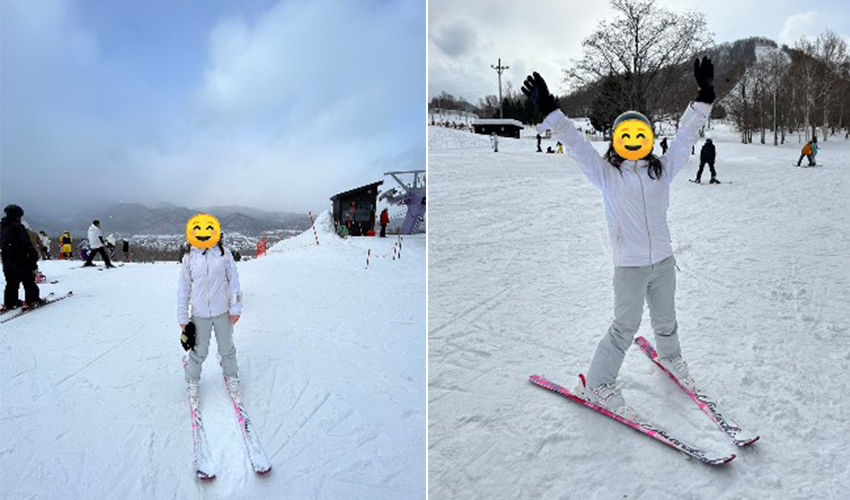
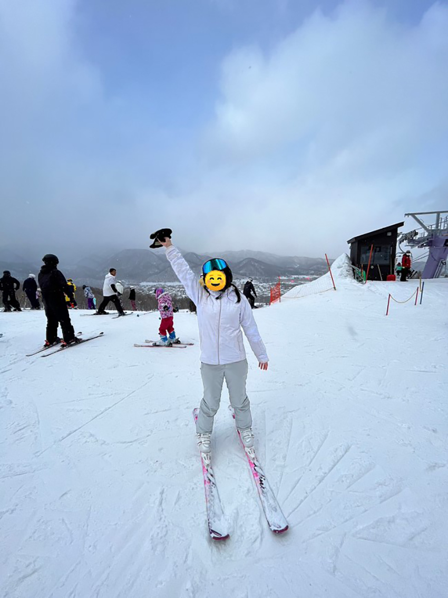

當人們想到冬季運動，滑雪往往是他們首先想到的活動之一。這項古老而令人著迷的運動不僅提供了一種健康的方式來享受冬天的戶外活動，而且還帶來了無盡的樂趣、刺激和挑戰。作為一個熱愛滑雪的人，我深深體會到了滑雪對我的生活所帶來的各種影響和價值。
首先，滑雪是一種極具挑戰性的運動。站在高山之巔，俯瞰著廣袤的雪原和陡峭的坡道，心中充滿了興奮和挑戰。滑雪讓我挑戰自我，不斷突破自己的極限。起初，我對於滑雪技巧一無所知，但透過不斷地練習和嘗試，我逐漸掌握了滑雪的技巧和技藝。從初學者到進階，再到挑戰高難度的坡道，每一次進步都讓我感到滿足和自豪。滑雪教會了我堅持不懈、勇於挑戰的精神，這種精神也潛移默化地影響了我的生活態度和工作態度。
其次，滑雪讓我感受到了與大自然的連結。站在雪坡上，眺望遠方的山脈，感受著清新的空氣和凜冽的寒風，我仿佛融入了這片雪域之中。每一次滑下陡峭的坡道，都是與自然融合的一次體驗，讓我感受到了生命的活力和美好。
北海道是世界上最受歡迎的滑雪勝地之一，其豐富的積雪和壯麗的山脈景觀吸引著來自世界各地的滑雪愛好者。作為一個熱愛滑雪的人，我有幸在北海道體驗過令人難忘的滑雪之旅。
|  |
北海道的滑雪季節通常從11月持續到4月，其穩定的雪量和低溫環境為滑雪提供了絕佳的條件。尤其是在3月，雪景更是令人嘆為觀止，白雪皚皚的山坡和樹林在陽光的照射下閃耀著晶瑩的光芒，讓人仿佛置身於一幅如詩如畫的冬日風景中。
這裡擁有許多知名的滑雪勝地，其中最著名的要屬二世古湖滑雪場和富良野滑雪場。二世古湖滑雪場位於札幌市以南，擁有豐富的雪量和多樣的雪道，適合各種技術水平的滑雪愛好者。而富良野滑雪場則以其絕美的景觀和優質的雪質聞名於世，吸引著眾多國內外的遊客前來體驗滑雪樂趣。
除了滑雪場外，北海道還擁有許多絕佳的滑雪路線和景點。例如，位於羊蹄山的雪村滑雪場，這裡不僅擁有優質的雪道和設施，還可以欣賞到羊蹄山的壯麗景色。此外，藻岩山也是一個受歡迎的滑雪勝地，這座火山除了提供優質的滑雪路線外，還可以俯瞰到札幌市的全景，讓人流連忘返。|  |
在北海道的滑雪之旅中，我不僅享受到了優質的雪質和多樣的滑雪路線，還感受到了北海道獨特的冬日風情和美麗的自然景觀。每一次下坡，都讓我感受到了刺激和快感，每一個轉彎，都讓我感受到了自然的美好和神奇。滑雪不僅是一種運動，更是一種享受，一種體驗大自然的方式，讓我對北海道的熱愛和向往更加深厚。
滑雪還讓我與朋友們建立了深厚的情誼。在雪場上，我們彼此扶持、互相鼓勵，共同克服困難，度過了許多美好的時光。滑雪不僅是一項運動，更是一個團隊合作的過程，我們一起分享著喜悅和激情，這樣的友情是珍貴而溫暖的。
滑雪也是一種放鬆身心的方式。當我站在雪坡上，我能夠忘卻一切煩憂和壓力，全身心地投入到滑雪的樂趣中。在這片白雪覆蓋的世界裡，我感受到了一種純粹的快樂和幸福，這種感覺無法用言語來形容，只有親身體驗過的人才能理解。
最後，滑雪也是一種極具社交性和團隊合作精神的活動。在雪山上，我們可以與家人和朋友一起分享這份樂趣和挑戰，共同面對困難和挑戰，共同享受成功和快樂。滑雪讓我們建立了深厚的友誼和互相信任的關係，讓我們更加團結和融洽。在這個過程中，我們學會了如何合作，如何溝通，如何相互支持，這些都是我們在生活中所需要的重要品質。
總結來說，滑雪對我來說不僅是一種運動，更是一種生活態度和精神寄託。在滑雪的世界裡，我感受到了自由、挑戰、友情和快樂，這些都是我熱愛滑雪的原因。我相信，無論未來身在何處，滑雪將永遠是我心中最珍貴的嗜好，陪伴著我走過人生的每一個階段。